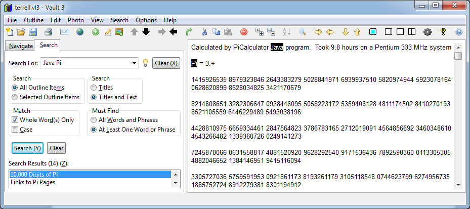

Use this command to search the outline for specific text. After the search is performed, the results are displayed in the Search Results list box. When
you click on items in the search results list box, it will be displayed in the text window with the search hits drawn with a black background.

Search for:
Enter the text to search for. To search for a phrase, surround the phrase with double-quotes, for example "10,000 Digits of Pi". You can access saved searches by dropping down the list.
Clear (X):
Clears the saved search history and the current search text.
Search All Outline Items
Select this radio button to search the entire outline.
Search Selected Outline Items
Select this radio button to search only the selected outline items and subordinate items.
Search Titles
Select this radio button to search only outline titles.
Search Titles and Text
Select this radio button to search outline titles and text.
Match Whole Words Only
Check this check box to match full words. For example, if the search text is "cat" and this check box is checked, items containing the word
cat will be found, but not items containing "cathode".
Match Case
Check this check box for case-sensitive searching. For example, if the search text is "Dog" and this check box is checked, items containing
"Dog" will fe found, but not items containing "dog".
All words and phrases must be found
Select this radio button to only find items containing all specified words and phrases.
At least one word or phrase must be found
Select this radio button to find items containing any of the specified words and phrases.
Search
Press this button to perform the search.
Clear
Press this button to clear the search results and remove the search hit highlighting from outline item text.
Search Results:
Click on the items in this list box to see the outline items that were found.